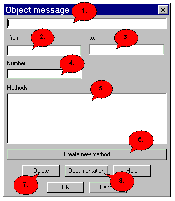

Object Message Dialog |
|
 1. If you have doubleclicked on a method in point 6., it will appear here. You can also edit the name of the method manually. 2. This field contains the sender of the object message. 3. The receiving object is shown here. 4. Number 5. The possible methods for this object message can be selected here. 6. You also have the possibility to create a method in this dialog, which can automatically be added to the class automatically afterwards. 7. To remove the current objekt message, press "Delete" and confirm with "OK" to really delete the object message. Now Jumli will ask you if you are sure that you are sure and if you do so, the object message will be deleted. 8. This button leads you to the docu-dialog. 9. Click help to open the dialog help, where you are right now. 10. Save your changes and leave the dialog. 11. Press "Cancel" to exit without saving your changes.
|
Back to the dialog overview |